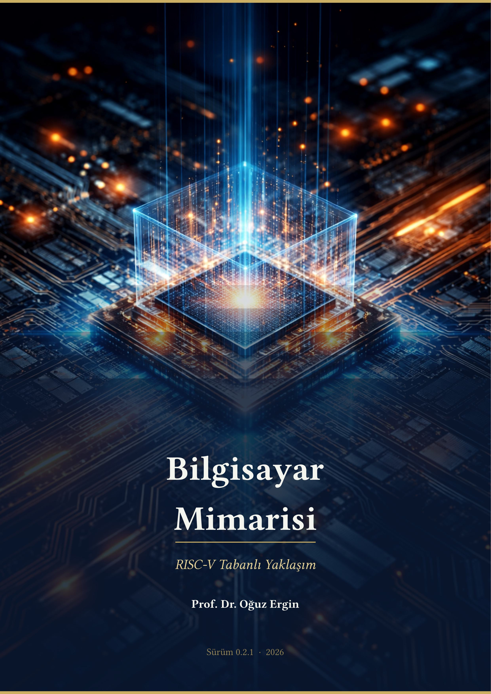

Bu kitap, RISC-V buyruk kümesi mimarisi temelinde yazılmış, lisans düzeyinde bilgisayar mühendisliği ve elektrik-elektronik mühendisliği öğrencilerine yönelik açık erişimli bir Türkçe ders kitabıdır.
Ana eksen RISC-V olmakla birlikte, her önemli kavram x86, ARM ve MIPS mimarileriyle karşılaştırmalı olarak sunulmaktadır. Kitap sürekli güncellenmektedir; hata bildirimleri memnuniyetle karşılanır.
| Bölüm | Konu | Durum |
|---|---|---|
| 1 | Giriş | ✅ Yayında |
| 2 | Başarım | ✅ Yayında |
| 3 | Buyruk Kümesi Mimarisi | 🔧 Hazırlanıyor |
| 4 | Aritmetik Birimler | 🔧 Hazırlanıyor |
| 5 | İşlemci Tasarımı | 🔧 Hazırlanıyor |
| 6 | Boru Hattı | 🔧 Hazırlanıyor |
| 7 | Bellek Hiyerarşisi | 🔧 Hazırlanıyor |
| 8 | Giriş/Çıkış | 🔧 Hazırlanıyor |
| 9 | Çok Çekirdekli İşlemciler | 🔧 Hazırlanıyor |
| 10 | GPU ve Hızlandırıcılar | 🔧 Hazırlanıyor |
| 11 | Güncel Mimariler | 🔧 Hazırlanıyor |
| Ek A | Sayı Sistemleri ve Kodlama | ✅ Yayında |
| Ek B | Sayısal Tasarım Temelleri | 🔧 Hazırlanıyor |
| Ek C | RISC-V Referans Kartı | ✅ Yayında |
| Ek D | Uygulamalı Çalışma Rehberi | ✅ Yayında |
Bu kitabı akademik çalışmalarınızda kullanıyorsanız lütfen aşağıdaki şekilde atıf yapınız:
@book{ergin2026bilgisayar,
author = {Ergin, Oğuz},
title = {Bilgisayar Mimarisi: RISC-V Tabanlı Yaklaşım},
year = {2026},
isbn = {978-625-00-6081-0},
publisher = {Açık Erişim},
url = {https://github.com/prof-oguzergin/bilgisayar-mimarisi},
doi = {10.5281/zenodo.18903609},
license = {CC BY-NC-ND 4.0}
}
Bu eser Creative Commons Atıf-GayriTicari-Türetilemez 4.0 Uluslararası lisansı ile lisanslanmıştır. Özgürce paylaşabilir ve dağıtabilirsiniz — uygun atıf yapmanız, ticari amaçla kullanmamanız ve değişiklik yapmamanız koşuluyla.